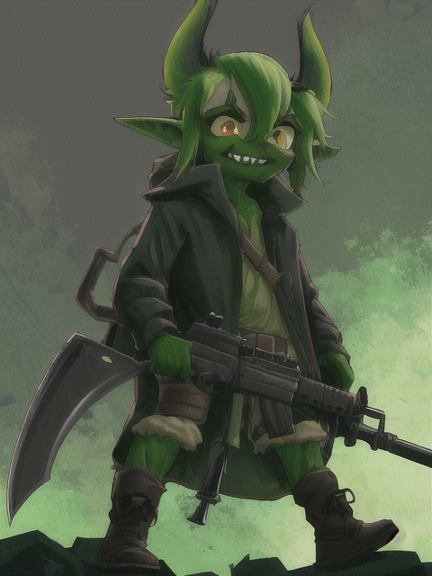

| 角色卡 - Skrik |
| 名稱 | Skrik |
| 種族 性別 | 哥布林族 男 |
| 年齡 | 未詳 |
| 身型 | 身高100cm 體重30kg |
| 職業 | 盜賊 |
| 說話方式 | 短促而狡猾的語調，常用尖銳的聲音和突然的短句來出人意料。 |
| 口頭禪 | "沒有什麼我偷不走的" |
| 個性 | 機警且狡猾，總是在尋找下一個獵物。 |
| 信念 | 只要能保護自己的生活就好。 |
| 開場時的缺憾 | 未詳 |
| 故事中的目標 | 生存，並在潛行和偷竊中找尋樂趣。 |
| 側寫 | 機警且狡猾的生存家。 |
| 簡史 | 一直以來都是以盜賊的身份生活，對於隱身和開鎖有著極高的技巧。他總是穿著深色的衣服，以方便在夜晚隱身。隨身攜帶一把短劍和一套竊賊工具，準備應對各種情況。由於他習慣在地下生活，對光線極為敏感，因此他總是戴著夜視眼鏡。他的短髮、綠色皮膚和大耳朵都是哥布林族的特徵。 |
| 原型參考 | 發想 - 哥布林族的典型形象 外觀 - 具有哥布林特徵的盜賊 |
| 形象概念 | 矮小的身材，穿著深色的衣服，易於隱身。 隨身攜帶一把短劍和一套竊賊工具。 由於對光線敏感，所以總是戴著夜視眼鏡。 頭上有短髮，綠色皮膚和大耳朵，都是哥布林族的特徵。  |
 ChatGPT
ChatGPT